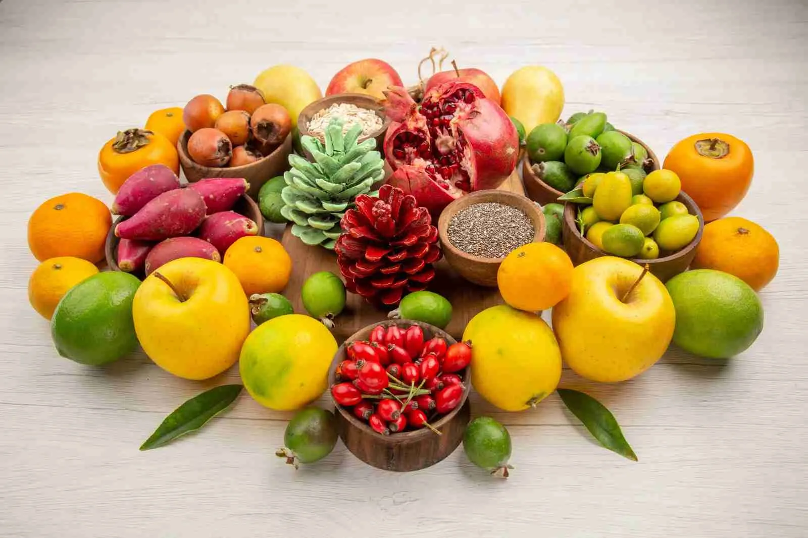
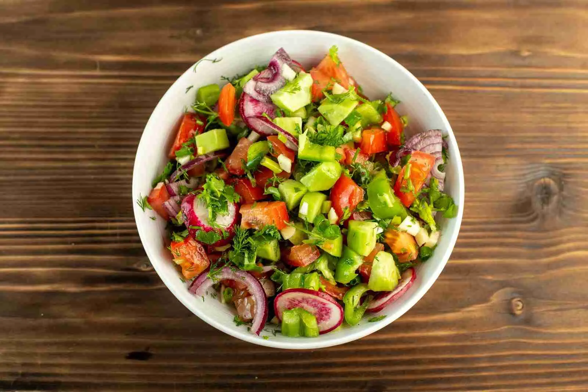
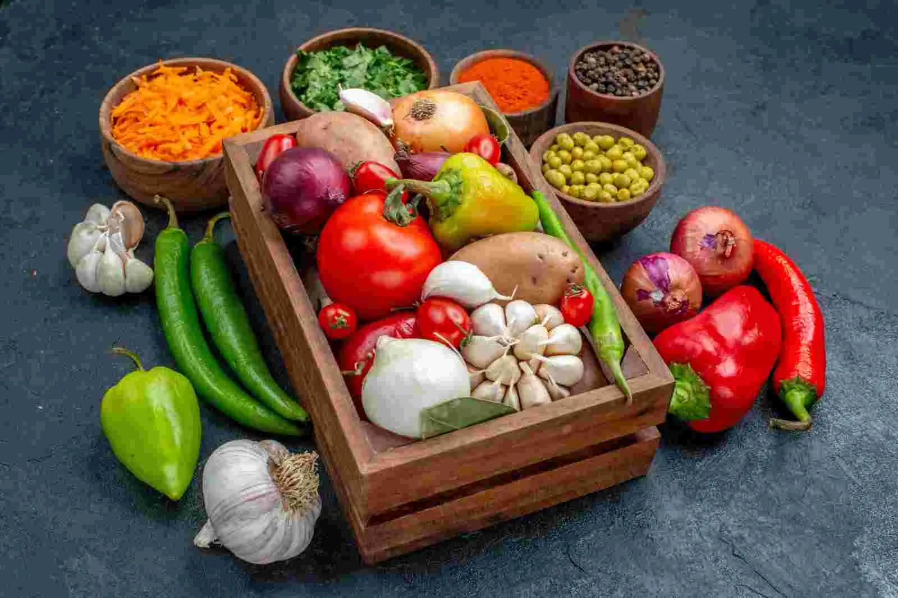
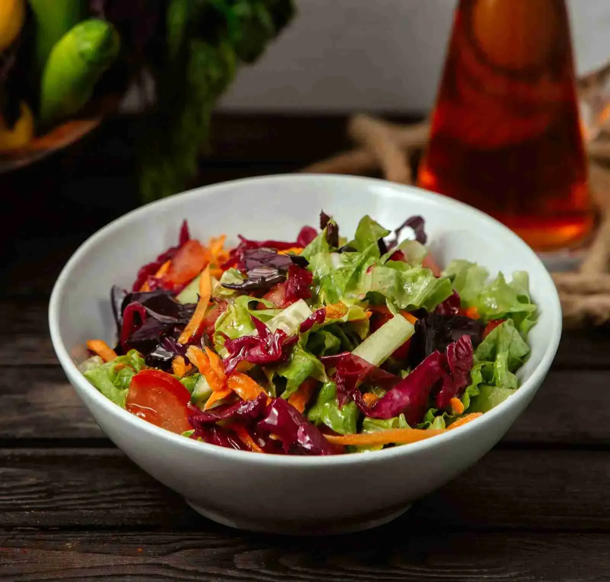
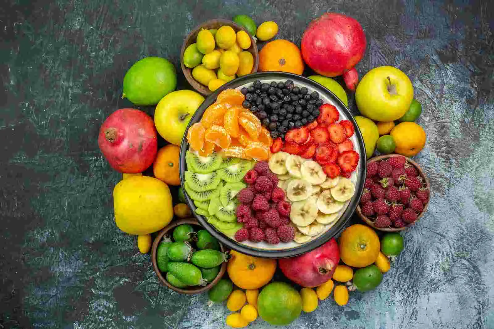
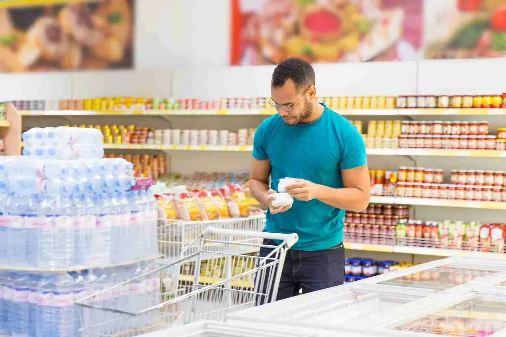

Jan 15, 2026 • By Chef Anna
5 Benefits of Organic Vegetables
Discover why shifting to organic soil produce is better for your gut health and the planet.
Read MoreGet healthy tips, recipes, and grocery shopping guides delivered from our farm to your screen.



Fuel your morning with these nutrient-dense recipes that take less than 10 minutes to prepare using our freshest organic eggs and berries.
Discover why shifting to organic soil produce is better for your gut health and the planet.
Read MoreStop the waste! These simple storage hacks will double the lifespan of your citrus and berries.
Read More
Ditch the processed sugar. These farm-fresh snack ideas are kid-approved and nutrient-packed.
Read More
Download our curated seasonal list to save time and ensure a balanced diet for your household.
Read More
From grass-fed butter to organic kefir, explore the probiotics that strengthen your immune system.
Read More
Why root vegetables and citrus are nature's way of protecting your health during the cold months.
Read More